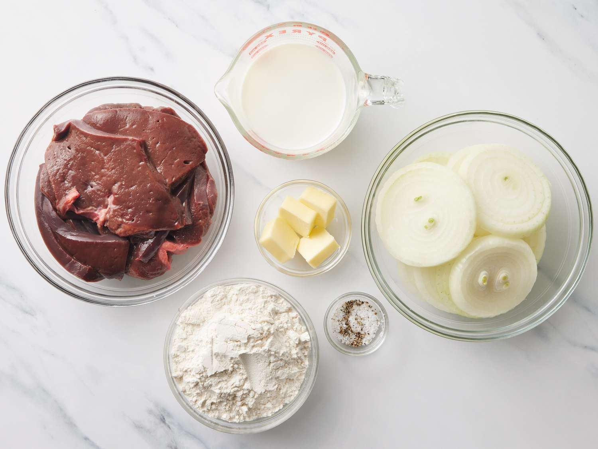

Home
Absolute Best Liver and Onions

Description
This liver and onions recipe will turn liver haters into converts!
Ingredients
- Liver: This recipe starts with two pounds of sliced beef liver.
- Milk: Soak the liver in milk before cooking to cut down on the liver’s bitterness.
- Butter: You’ll need half a stick of butter.
- Onions: This recipe calls for Vidalia onions, but you can use any sweet or yellow onion you like.
- Flour: Coat the liver in flour before you cook it.
- Seasonings: The liver is simply seasoned with salt and pepper.
Steps
- Soak the liver in milk.
- Cook the onions in butter, then set aside.
- Coat the liver in flour and cook in butter.
- Return the onions to the skillet and continue cooking.